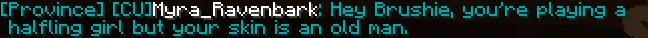
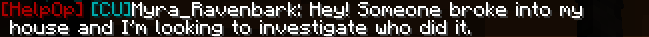
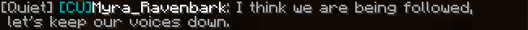
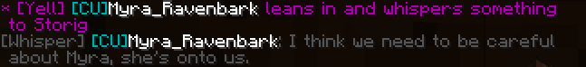

We have a unique chat plugin at BWRP that allows for both in-character (IC) and out-of-character (OOC) chats. Our plugin is range restricted, so someone across the world, across the town, or even a few blocks away may not be able to hear you depending on which range you are using.
Each of the ranges have an emote available to them which can be used by adding “/me” before the abbreviated chat range to do an in-character emote. Be sure to use the right emote when roleplaying; If you are whispering with someone, but then you punch them in the face, you may be speaking in whisper range, but will want to emote in a longer range.
Example: “/mel draws her sword and clangs it against the post!”Used with “/global” or “/g”, this chat range is used for OOC chats across the entire server. Global chat can be heard even if you are on another plane of existence.
Example: "/g Good morning, everyone!"
Used with “/province” or “/p” . this chat projects your OOC voice 500 blocks from your current location. This is mostly used for local out-of-character chat, mostly for clarifying questions or non-meta OOC knowledge.
Example: “/p Hey Brushie, you’re playing a halfling girl but your skin is an old man.”

Used with “/helpop”, this chat range sends a message to all online Storytellers when you’re in need of something. This can be anything from needing to begin medical roleplay or asking if a storyteller is available to investigate a theft. You may want to ping @storyteller on discord if one is not available through /helpop.
Example: “/helpop Hey! Someone broke into my house and I’m looking to investigate who did it.”

Used with “/alarm” or “/a”, this chat range is a rarely used in-character chat range to display extremely loud in character actions in a 250 block radius. Alarm range is mostly only used for emotes as most cannot talk this loud.
Example: “/mea rings the gong within Balinks School of Beatdowns.”
Used with “/yell” or “/y”, this chat range is used to indicate when your character is yelling. It has a 75 block range. Yell is typically the loudest chat range used when a character is actually speaking.
Example: “/y HOW DARE YEW!”
Used with “/local” or “/l”, this chat range is the most commonly used in-character voice chat range. With a range of 20 blocks, it can be best described as using your outside voice.
Example: “/l Goodday, Don! I have a blacksmithing order for you.”
Used with “/quiet” or “/q”, this chat range is a frequently used in-character chat range. It has a range of 10 blocks and is best described as using your inside voice. Often, players use quiet range when speaking in their homes when they do not wish for people outside the home to hear their conversation.
Example: “/q I think we are being followed, let’s keep our voices down.”

Used with “/whisper” or “/w”, this in-character chat range is used when you do not wish for anyone else to hear what you are saying to another character. It has a range of 3 blocks, and if within sight of another character must be accompanied with an emote to indicate the two characters are whispering. If the characters are by themselves, no emote is needed.
Example: “/mey leans in and whispers something to Storig” followed by the actual whisper “/w I think we need to be careful about Myra, she’s onto us.”
